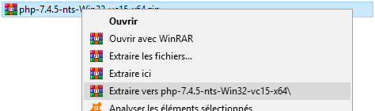
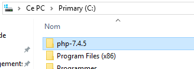
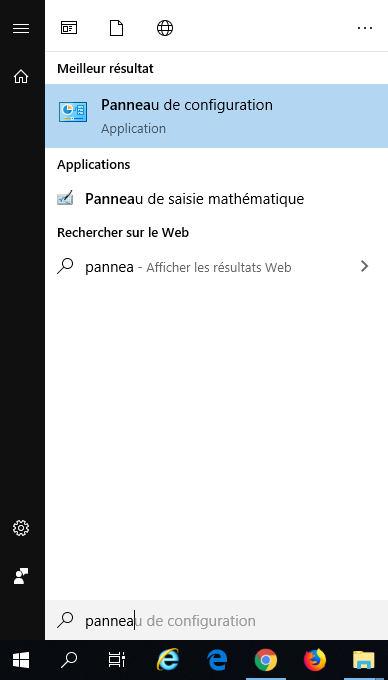
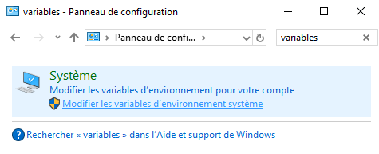
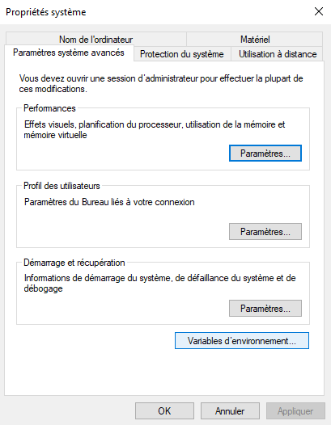
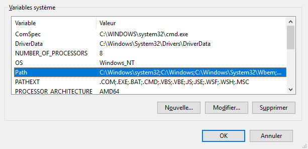
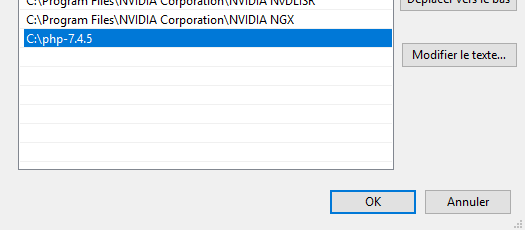
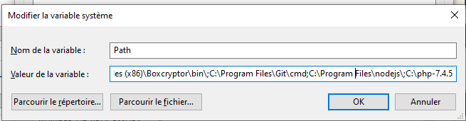
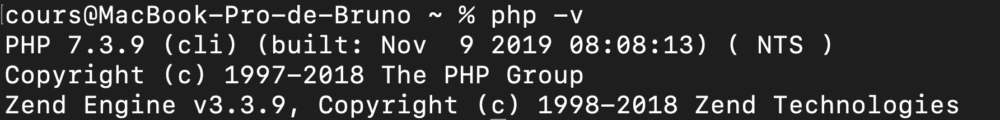
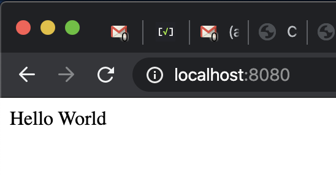

Actuellement, les sites que l'on développe sont statiques
Tous les visiteurs obtiennent les mêmes fichiers HTML/CSS/JS
C'est suffisant dans une certaine mesure, mais si on souhaite renvoyer des contenus différents selon différents critères, cela pose problème
Exemples de critères :
Nous allons avoir besoin de modifier les contenus avant qu'ils soient envoyés à l'utilisateur
C'est à dire directement sur le serveur
Les visiteurs continueront d'obtenir du HTML/CSS/JS, mais celui-ci aura été préalablement modifié par le serveur
☝️ Comme l'utilisateur ne récupère que du HTML/CSS/JS, il n'a pas accès au code effectué côté serveur
Nous allons donc devoir apprendre un language serveur et il en existe plusieurs
Nous allons commencer par PHP
Au final, le PHP va nous permettre de renvoyer du HTML, mais en faisant plein de choses avant
Le logiciel Apache Server va permettre de lancer un serveur
Apache Server va utiliser PHP pour interpréter les fichier .php
Il faudrait donc installer Apache Server et PHP sur nos ordinateurs
Tout ça est compliqué, mais il existe des solutions relativement simples
PHP, dans ses dernières versions, intègre un serveur Apache minimalist
Nous allons donc simplement installer PHP
Si vous êtes sur MacOS 10.0.0 minimum (Mojave), vous n'avez rien à faire car vous possédez déjà php
🥳
Sur Windows, il va falloir télécharger PHP, le mettre à un endroit fixe sur l'ordiateur et créer une variable système pointant sur ce dossier
😒
Téléchargez PHP via ce lien et décompressez l'archive (clique droit, extraire vers ...)

Renommez le dossier php-7.4.5
Déplacez le dossier dans C:

Ouvrez le Panneau de Configuration (Control Panel)

Cherchez le mot variables

Cliquez sur Variables d'environnement... (Environment Variables...)

Dans la section du bas, selectionnez Path puis cliquez sur Modifier... (Edit...)

Ajoutez une variable en cliquant sur Nouveau (New) et nommez la C:\php-7.4.5 (s'il s'agit de l'emplacement du dossier)

⚠️ Sur certaines versions de windows, il faut ajouter ;C:\php-7.4.5

Faites OK pour valider et fermer toutes les fenêtres et relancez votre terminal (qu'il s'agisse de l'invit de command ou de git bash)
Pour tester si php est bien disponible, relancez votre terminal et tapez
php -v

☝️ il se peut que la version soit légèrement différente, mais tant qu'elle est supérieure à 7, c'est bon
Maintenant que nous avons PHP disponible dans le terminal, nous allons pouvoir lancer un serveur
Créez un dossier là où vous avez l'habitude de coder
Créez un fichier index.php et ajoutez-y le code suivant
<?php
echo 'Hello World';
?>
☝️ Nous expliquerons ce code plus tard
Allez dans ce dossier depuis le terminal
cd /chemin/vers/mon/dossier
Lancez le serveur avec la commande suivante
php -S localhost:8080
☝️ Tant que le serveur tourne, votre terminal ne sera plus utilisable
Pour l'arrêter, faites simple CTRL + C
Vous pouvez tester le site à l'adresse suivante

🥳
La partie PHP est délimitée par <?php et ?>
Il est possible d'utiliser une version shortcut <? et ?>, mais celle-ci ne fonctionne pas sur toutes les configurations
echo indique que le script doit renvoyer ce qui suit
Contrairement au JS, chaque instruction doit impérativement se terminer par un ;
<?php
echo 'Hello World';
?>
Lorsqu'il n'y a que du PHP, il est inutile de fermer PHP
<?php
echo 'Hello World';
☝️ Cela peut même nous éviter des bugs, mais nous verrons cela plus tard
Les commentaires fonctionnent comme en JS
Plusieurs lignes entre /* et */
Une seule ligne précédée par //
<?php
/*
Plusieurs lignes
comme ça
*/
echo 'Hello'
// Une seule ligne comme ça
echo 'World';
En dehors des balises PHP <?php et ?> vous pouvez mettre du HTML
Si vous voulez mettre du PHP dans une page HTML pensez simplement à changer l'extension de votre fichier de .html à .php
<?php echo 'Hello World'; ?>
<a href="#">Mon lien</a>
Si aucun fichier n'est spécifié dans l'URL, le serveur va automatiquement charger index.php
Si nous souhaitons créer d'autres pages, il suffit de créer de nouveaux fichiers tel que contact.php